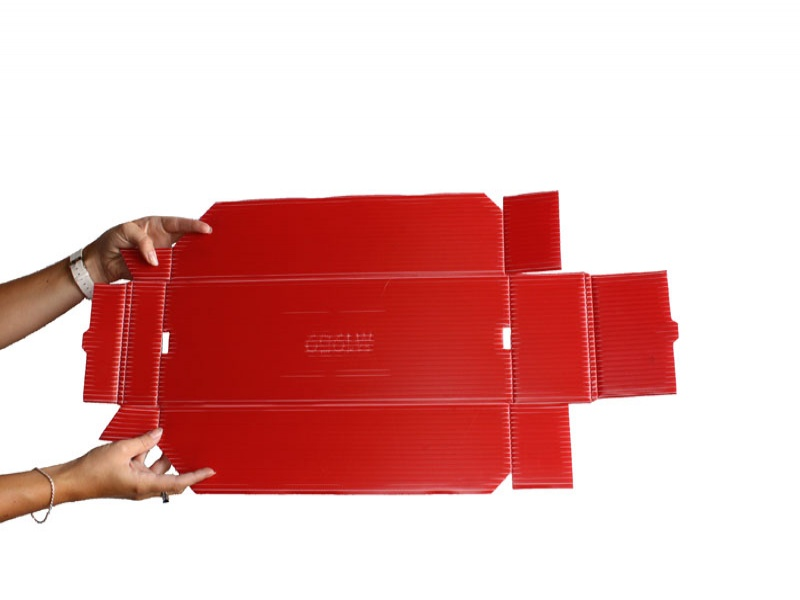

bins revision 1751

Challenge
Liquid containers are critical to several Replimat components including the battery and
sink.
Approach
3D printed bins
{| class="wikitable"
|-
! Part !! Link
|-
| 1x1 assortment box || [[https://www.thingiverse.com/thing:4160638|Thingiverse]]
|-
| 1x2 assortment box || [[https://www.thingiverse.com/thing:4160745|Thingiverse]]
|-
| 1x3 assortment box || [[https://www.thingiverse.com/thing:4160755|Thingiverse]]
|-
| 1x4 assortment box || [[https://www.thingiverse.com/thing:4160763|Thingiverse]]
|-
| 1x5 assortment box || [[https://www.thingiverse.com/thing:4160785|Thingiverse]]
|-
| 2x2 assortment box || [[https://www.thingiverse.com/thing:4160774|Thingiverse]]
|-
| 2x3 assortment box || [[https://www.thingiverse.com/thing:4160793|Thingiverse]]
|-
| 2x6 assortment box || [[https://www.thingiverse.com/thing:4160787|Thingiverse]]
|-
| Drawer handle || [[https://www.thingiverse.com/thing:4160874|Thingiverse]]
|}
Coroplast bins
Drawers for bins
Interoperability
Development targets
- A better bucket would be square or triangular and sit flat on the ground. And have an optional lid and paracord / coroplast / printed handle
- If a 4ft square sheet is folded into a 600mm wide box, how high are the sides?
References
- http://www.origami-instructions.com/origami-box.html
- http://origami.about.com/od/Origami-Boxes/ss/Origami-Open-Box-Instructions-Easy.htm#showall
- http://www.notcot.com/archives/2011/08/veuve-clicquot-origami-bucket.php
- http://www.instructables.com/id/Electrolytic-Rust-Removal-aka-Magic/